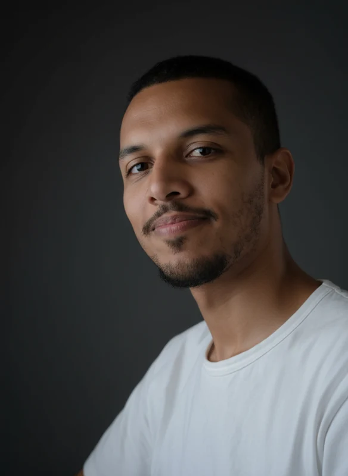

FINAL-YEAR MECHANICAL ENGINEERING STUDENT
Mohamed Slimani
Design it.
Analyze it.
Make it.
Mechanical design, simulation and hands-on manufacturing. I connect engineering models with the practical work of making parts.
Six-month PFE · January / February 2027
Fès, Morocco · Open to relocation

 See the workshop work ↗
See the workshop work ↗01 / SELECTED WORK
From geometry
to something tangible.
Start with three projects that bring together design, numerical analysis and work in the workshop.
Explore all 13 case studies ↗ManufacturingUEMF: from CAD to the workshop
CAD, CAM, CNC machining, molds, additive post-processing and instrumentation in one hands-on laboratory experience.
 Design
DesignCranial reconstruction & mold concept
Turning irregular anatomical geometry into a fitted implant concept and a mold-design study.
 Simulation
SimulationFuselage structural analysis
A fuselage-section design study connecting parametric geometry to static and modal FEA.
 BUILT IN THE LAB
BUILT IN THE LABMORE THAN A CAD MODEL
A manufacturing
perspective.
My UEMF experience spans a powder-flowability apparatus, CAD/CAM preparation, CNC machining, tooling, additive post-processing and maintenance.
Explore the original photos by activity to see the practical work behind each skill.
02 / SKILLS, WITH CONTEXT
Choose a skill.
Find the work behind it.
Tools matter most when they solve a real engineering task. Select a discipline to see relevant examples.
03 / EXPERIENCE
Different environments.
One engineering approach.
Guide Valve Limited
Mechanical design engineer · freelance
TE Connectivity
Product engineering intern
MOBDIE
Design & prototyping engineer
Flyson
Process optimization intern
UEMF Advanced Manufacturing Lab
Design & manufacturing intern

THE PERSON BEHIND THE WORK
Curious about the model.
Hands-on with the part.
I’m a final-year Mechanical Engineering student at Euromed University of Fès, with experience across industrial product design, engineering analysis and manufacturing. I’m looking for a six-month final-year internship starting in January or February 2027.
More about my background ↗